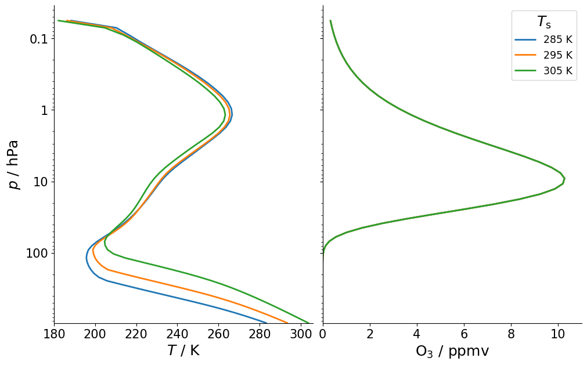
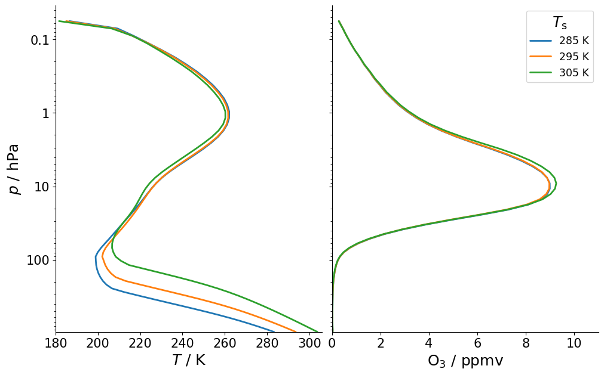

Ozone#
import matplotlib.pyplot as plt
from typhon import plots
import konrad
plots.styles.use()
Fixed ozone distribution#
In it’s default configuration, konrad will keep a fixed vertical distribution of ozone following the RCEMIP protocol [Wing et al., 2018]. As a consequence, no matter how the thermodynamic state of the atmosphere changes, the amount and distribution of ozone will stay the same.
phlev = konrad.utils.get_quadratic_pgrid(top_pressure=5, num=64)
atmosphere = konrad.atmosphere.Atmosphere(phlev)
fig, (ax0, ax1) = plt.subplots(ncols=2, sharey=True)
for Ts in [285, 295, 305]:
rce = konrad.RCE(
atmosphere,
surface=konrad.surface.FixedTemperature(temperature=Ts),
timestep="12h",
max_duration="150d",
)
rce.run()
l, = plots.profile_p_log(rce.atmosphere["plev"], rce.atmosphere["T"][-1], ax=ax0)
ax0.set_xlabel(r"$T$ / K")
ax0.set_xlim(180, 306)
ax0.set_ylabel("$p$ / hPa")
ax0.set_ylim(bottom=atmosphere["plev"].max())
plots.profile_p_log(
rce.atmosphere["plev"],
rce.atmosphere["O3"][-1] * 1e6,
label=f"{Ts} K",
color=l.get_color(),
ax=ax1,
)
ax1.set_xlabel(r"$\rm O_3$ / ppmv")
ax1.set_xlim(0, 11)
ax1.legend(title=r"$T_\mathrm{s}$", fontsize="x-small")

Linear ozone parameterization#
In a warming climate, however, we expect the ozone concentration to change with the atmospheric temperature profile. Konrad includes a linearized ozone scheme introduced by Cariolle and Teyssèdre [2007]. This schemme accounts for the effect of a changing temperature profile.
fig, (ax0, ax1) = plt.subplots(ncols=2, sharey=True)
for Ts in [285, 295, 305]:
rce = konrad.RCE(
atmosphere,
surface=konrad.surface.FixedTemperature(temperature=Ts),
ozone=konrad.ozone.Cariolle(),
timestep="2h",
max_duration="150d",
)
rce.run()
l, = plots.profile_p_log(rce.atmosphere["plev"], rce.atmosphere["T"][-1], ax=ax0)
ax0.set_xlabel(r"$T$ / K")
ax0.set_xlim(180, 306)
ax0.set_ylabel("$p$ / hPa")
ax0.set_ylim(bottom=rce.atmosphere["plev"].max())
plots.profile_p_log(
rce.atmosphere["plev"],
rce.atmosphere["O3"][-1] * 1e6,
label=f"{Ts} K",
color=l.get_color(),
ax=ax1,
)
ax1.set_xlabel(r"$\rm O_3$ / ppmv")
ax1.set_xlim(0, 11)
ax1.legend(title=r"$T_\mathrm{s}$", fontsize="x-small")
